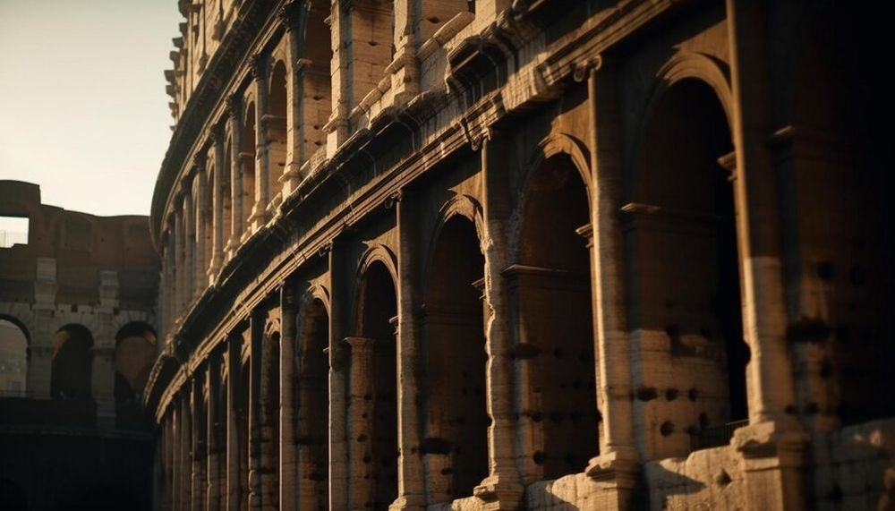

Descoperă Lecce - O bijuterie barocă în sudul Italiei
Lecce este un oraș impresionant din Italia, renumit pentru arhitectura sa barocă și atmosfera sa autentică:
-

Basilica Santa Croce - Capodoperă barocă
O biserică uimitor ornamentată, cu sculpturi detaliate și decorațiuni extravagante.
-

Piazza del Duomo - Piața centrală
O piață impresionantă, înconjurată de clădiri istorice și dominată de Catedrala Lecce.
-

Amfiteatrul roman - Mărturie istorică
O structură antica bine conservată, amintind de moștenirea romană a orașului.
-

Arhitectura barocă - Orașul ca muzeu
Străzi și clădiri magnifice, bogat ornamentate în stil baroc, definind peisajul urban.
-

Bucătăria locală - Arome autentice
Bucătăria din Lecce oferă specialități delicioase precum pasticciotto și taralli.
Concluzii
Lecce este un oraș de neuitat, cu arhitectură barocă spectaculoasă și farmec italian autentic.